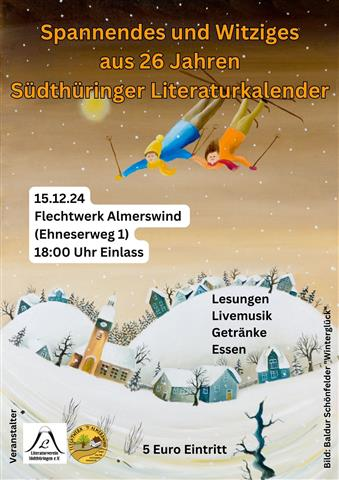

Schalkau/Almerswind. Für Sonntag, den 15. Dezember 2024, 18:30 Uhr, laden die Macher vom Flechtwerk Almerswind um André Kranich und der Südthüringer Literaturverein um Vereinschef Holger Uske zu Literatur und Musik ein. In den Räumen von „Flechtwerk" in Almerswind, Ehneser Weg 1, heißt es dann „Spannendes und Witziges aus 26 Jahren Südthüringer Literaturkalender". Autorinnen und Autoren aus der Region werden einige ihrer Kalendertexte vorstellen. Die musikalische Begleitung obliegt „Angie and Friends". Hinter dem Bandnamen verbergen sich Angelika Schiekel und Franz Bäz aus Schalkau, die schon seit Jahren in der Region musikalisch unterwegs sind und mit eigenen Songs begeistern.
Auf der literarischen Bühne wird u. a. Thomas Schwämmlein, Historiker, langjähriger Redakteur beim Freien Wort in Sonneberg und im Nebenamt Kreisheimatpfleger aktiv werden. Neben ihm agiert u. a. Holger Uske, der seit 1990 den Südthüringer Literaturverein leitet, unter dessen Dach seit 1998 sechs Literaturkalender „Thüringer Ansichten" erschienen mit Texten, Fotografien und Bildern hiesiger Künstler.
Interessenten aus nah und fern sind zu diesem außergewöhnlichen Abend im Flechtwerk herzlich willkommen. Neben Literatur und Musik gibt es auch Getränke und Kleinigkeiten zu essen. Einlass ist ab 18 Uhr. Der Eintritt beträgt 5 €.
